Introduction¶
This section contains some exploratory plots.
using CovidData
using CovidRt
Error: importing CovidRt into Main conflicts with an existing identifier
using TransformVariables, Parameters, Plots, StatsPlots, DataFrames, Dates, LinearAlgebra, Distributions, Random, LogDensityProblems, DynamicHMC, MCMCChains, JLD2, Latexify
Plots.pyplot()
df = CovidData.statedata(policies=:indicators, fillmissingmobility=true)
df[!,:log_encounters_rate] = log.(1 .+ df[!,:encounters_rate])
# create ΔlogΔcases
sdf = filter(x->x.fips < 60, df)
sort!(sdf, (:state, :date))
L1 = L2 = 7
sdf[!,:Δcases] = by(sdf, :state, Δcases = Symbol("cases.nyt") => x->lagdiff(x, L1))[!,:Δcases]./L1
sdf[!,:ΔlogΔcases] = by(sdf, :state, ΔlogΔcases =:Δcases => x->lagdiff(log.(max.(x,0.1)), L2))[!,:ΔlogΔcases]./L2
googlevars = [:retail_and_recreation_percent_change_from_baseline,
:grocery_and_pharmacy_percent_change_from_baseline,
:parks_percent_change_from_baseline ,
:transit_stations_percent_change_from_baseline,
:workplaces_percent_change_from_baseline,
:residential_percent_change_from_baseline]
homebasevars = [:percentchangehours,
:percentchangebusinesses]
unacastvars = [:n_grade_total,
:daily_distance_diff,
:n_grade_distance,
:daily_visitation_diff,
:n_grade_visitation,
:log_encounters_rate,
:n_grade_encounters]
7-element Array{Symbol,1}:
:n_grade_total
:daily_distance_diff
:n_grade_distance
:daily_visitation_diff
:n_grade_visitation
:log_encounters_rate
:n_grade_encounters
Choosing lag length¶
Here we plot time series of $\Delta \log(\Delta cases)$ and each of the activity measurements.
We also plot the covariances of $\Delta \log(\Delta cases)$ and $m(t+\ell)$ as a function of $\ell$ for each of the activity measurement variables, $m$
datelim = (Date("2020-03-07"), Dates.today())
xlim = Dates.value.(datelim)
function acf(df, id, t, x, y, tdiffs=[-20:20]; correlation=false)
if !issorted(df, (id, t))
@error "df not sorted"
end
X = df[!,x]
c = zeros(size(tdiffs))
cfn = correlation ? cor : cov
for (i, t) in enumerate(tdiffs)
ylag = by(df, id, ylag= y => z->CovidRt.lag(z,t))[!,:ylag]
inc = .!ismissing.(X) .& .!(ismissing.(ylag))
c[i] = cfn(X[inc],ylag[inc])
end
return(c)
end
states_to_plot = ["New York", "New Jersey","Massachusetts","California",
"Georgia","Illinois","Michigan",
"Ohio","Wisconsin","Washington"]
vars = vcat(googlevars, homebasevars, unacastvars)
states_to_plot = ["New York", "New Jersey","Massachusetts","California",
"Georgia","Illinois","Michigan",
"Ohio","Wisconsin","Washington"]
vars = vcat(googlevars, homebasevars, unacastvars)
function explorelags(vars, sdf, states_to_plot; toplot=vars, tdiffs=-10:40, correlation=true)
argmaxc = zeros(Int64,length(vars))
maxc = zeros(length(vars))
for (j,v) in enumerate(vars)
if v in toplot
fig = Vector{Any}(undef, length(states_to_plot))
for (i, st) in enumerate(states_to_plot)
subdf = filter(x->x.state.==st, sdf)
fig[i] = @df subdf plot(:date, :ΔlogΔcases, title=st, color=colors[1], ylab="ΔlogΔcases", xlim=xlim, legend=:topleft, labels="ΔlogΔcases")
fig[i] = twinx()
fig[i] = plot!(fig[i],subdf[!,:date], subdf[!,v], color=colors[2], labels=string(v), ylab=string(v), xlim=xlim, legend=:topright)
end
display(plot(fig[1:9]..., layout=(3,3), reuse=false))
end
c = acf(sdf, :state, :date, :ΔlogΔcases, v, tdiffs, correlation=correlation)
a = argmax(abs.(c))
argmaxc[j] = tdiffs[a]
maxc[j] = c[a]
cword = correlation ? "Correlation" : "Covariance"
if v in toplot
fig=plot(tdiffs, c, title="$cword of ΔlogΔcases[t] & $(string(v))[t+ℓ]",
xlab="ℓ", ylab="$cword", legend=:none, linewidth=1.5)
display(plot(fig, reuse=false))
end
end
cword = correlation ? "cor" : "cov"
tbl = vcat(["Variable" "ℓ maximum $cword" "maximum $cword"],[replace.(string.(vars),r"\_"=>s" ") argmaxc maxc])
if !correlation
tbl=hcat(tbl, ["variance", [var(skipmissing(sdf[!,v])) for v in vars]...])
end
return(latexify(tbl, env=:mdtable, latex=false, fmt="%.2f"))
end
tbl=explorelags(vars, sdf, states_to_plot;
toplot=[:residential_percent_change_from_baseline,
:percentchangebusinesses,
:n_grade_total,
:daily_visitation_diff,
:log_encounters_rate])
| Variable | ℓ maximum cor | maximum cor |
|---|---|---|
| retail and recreation percent change from baseline | 15.00 | 0.80 |
| grocery and pharmacy percent change from baseline | 11.00 | 0.66 |
| parks percent change from baseline | 16.00 | 0.27 |
| transit stations percent change from baseline | 15.00 | 0.72 |
| workplaces percent change from baseline | 15.00 | 0.80 |
| residential percent change from baseline | 15.00 | -0.75 |
| percentchangehours | 15.00 | 0.80 |
| percentchangebusinesses | 14.00 | 0.79 |
| n grade total | 14.00 | -0.67 |
| daily distance diff | 14.00 | 0.75 |
| n grade distance | 14.00 | -0.63 |
| daily visitation diff | 15.00 | 0.79 |
| n grade visitation | 15.00 | -0.47 |
| log encounters rate | 16.00 | 0.49 |
| n grade encounters | 15.00 | -0.44 |
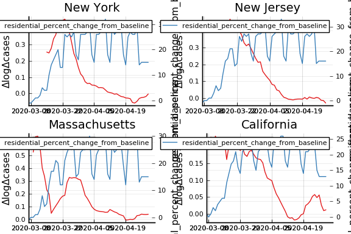 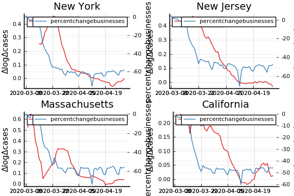 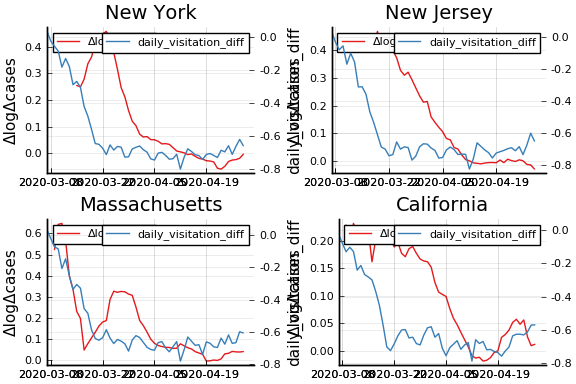
println(tbl)
| Variable | ℓ maximum cor | maximum cor |
|---|---|---|
| retail and recreation percent change from baseline | 15.00 | 0.80 |
| grocery and pharmacy percent change from baseline | 11.00 | 0.66 |
| parks percent change from baseline | 16.00 | 0.27 |
| transit stations percent change from baseline | 15.00 | 0.72 |
| workplaces percent change from baseline | 15.00 | 0.80 |
| residential percent change from baseline | 15.00 | -0.75 |
| percentchangehours | 15.00 | 0.80 |
| percentchangebusinesses | 14.00 | 0.79 |
| n grade total | 14.00 | -0.67 |
| daily distance diff | 14.00 | 0.75 |
| n grade distance | 14.00 | -0.63 |
| daily visitation diff | 15.00 | 0.79 |
| n grade visitation | 15.00 | -0.47 |
| log encounters rate | 16.00 | 0.49 |
| n grade encounters | 15.00 | -0.44 |
Some comments:
-
There is are noticeable weekend effects, especially in
residential percent change from baselinefrom Google mobility reports. -
There’s some effect of Easter visible in
percent change business -
The variables
n grade total,daily visitation diffandencounters rateare from Unacast. -
It is not just a coincidence that the maximum autocovariance is at $14 = L_1 + L_2$. The timing convention being followed here is that
so it is no surprise that lags of these measurement errors are correletaed with $\Delta log \Delta cases[t]$.
Given the long differencing, what are the correct lags of measurement variables to use?¶
In discrete time, the model is
Combining these we get
where $\overline{R}_{t-L_1, t}$ is the “average”1 effective reproductive from time $t-L_1$ to $t$.
Similarly,
If $L_1 = L_2$, then we get some convenient cancellations when taking the log difference:
!!! question Is this $L_1 = L_2$ condition correct and general? Or some artifact of this derivation? I think it would appear if the model were in continuous time as well.
From this derivation, we see that ΔlogΔcases[t] should depend on the
reproductive number of confirmed cases from time $t-L$ to $t$. Since
there is a delay between infection and detection, the reproductive
number of confirmed cases, depends on actual conditions some time
further in the past.
Moving average measurement variables¶
Motivated by the analysis in the previous section, we will use the moving average from $t-L$ to time $t$ in place of each measurement variable at time $t$.
L = 7
sdf = filter(x->x.fips < 60, df)
sort!(sdf, (:state, :date))
sdf[!,:Δcases] = by(sdf, :state, Δcases = Symbol("cases.nyt") => x->lagdiff(x, L))[!,:Δcases]./L
sdf[!,:ΔlogΔcases] = by(sdf, :state, ΔlogΔcases =:Δcases => x->lagdiff(log.(max.(x,0.1)), L))[!,:ΔlogΔcases]./L
w = vcat(ones(L+1), zeros(L))
for v in vcat(googlevars, homebasevars, unacastvars)
sdf[!,v]=by(sdf, :state, x = v => x->CovidRt.smooth(x,w=w))[!,:x]
end
tbl=explorelags(vars, sdf, states_to_plot;
toplot=[:residential_percent_change_from_baseline,
:percentchangebusinesses,
:n_grade_total,
:log_encounters_rate], correlation=false)
| Variable | ℓ maximum cov | maximum cov | variance |
|---|---|---|---|
| retail and recreation percent change from baseline | 14.00 | 2.24 | 426.19 |
| grocery and pharmacy percent change from baseline | 9.00 | 1.23 | 184.22 |
| parks percent change from baseline | 13.00 | 1.23 | 855.44 |
| transit stations percent change from baseline | 14.00 | 2.14 | 534.46 |
| workplaces percent change from baseline | 14.00 | 2.03 | 363.65 |
| residential percent change from baseline | 14.00 | -0.79 | 57.28 |
| percentchangehours | 14.00 | 2.68 | 636.21 |
| percentchangebusinesses | 13.00 | 2.02 | 401.74 |
| n grade total | 12.00 | -0.08 | 0.71 |
| daily distance diff | 14.00 | 0.02 | 0.03 |
| n grade distance | 11.00 | -0.07 | 0.67 |
| daily visitation diff | 14.00 | 0.02 | 0.05 |
| n grade visitation | 10.00 | -0.08 | 1.26 |
| log encounters rate | 14.00 | 0.11 | 3.13 |
| n grade encounters | 14.00 | -0.08 | 2.16 |
 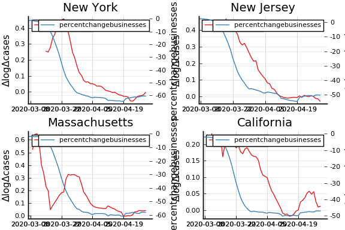
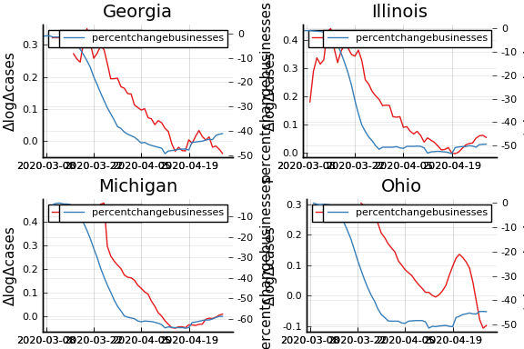
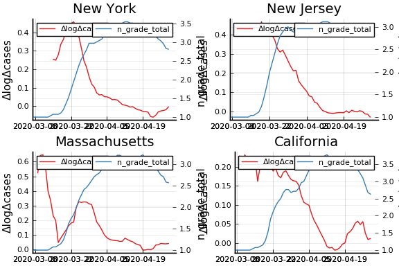
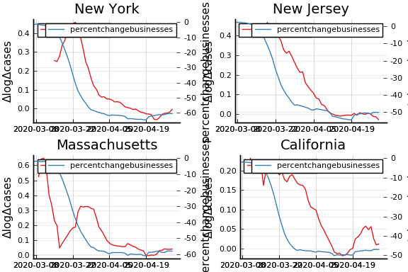
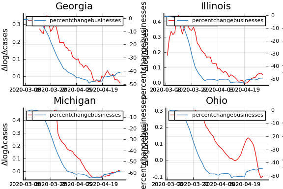
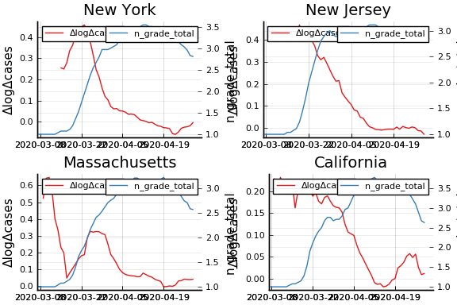
println(tbl)
| Variable | ℓ maximum cov | maximum cov | variance |
|---|---|---|---|
| retail and recreation percent change from baseline | 14.00 | 2.24 | 426.19 |
| grocery and pharmacy percent change from baseline | 9.00 | 1.23 | 184.22 |
| parks percent change from baseline | 13.00 | 1.23 | 855.44 |
| transit stations percent change from baseline | 14.00 | 2.14 | 534.46 |
| workplaces percent change from baseline | 14.00 | 2.03 | 363.65 |
| residential percent change from baseline | 14.00 | -0.79 | 57.28 |
| percentchangehours | 14.00 | 2.68 | 636.21 |
| percentchangebusinesses | 13.00 | 2.02 | 401.74 |
| n grade total | 12.00 | -0.08 | 0.71 |
| daily distance diff | 14.00 | 0.02 | 0.03 |
| n grade distance | 11.00 | -0.07 | 0.67 |
| daily visitation diff | 14.00 | 0.02 | 0.05 |
| n grade visitation | 10.00 | -0.08 | 1.26 |
| log encounters rate | 14.00 | 0.11 | 3.13 |
| n grade encounters | 14.00 | -0.08 | 2.16 |
Even after this adjustment, there is some mechanical dependence between when the maximum correlation occurs and $L$.
for L in [1, 3, 7, 10, 14]
sdf = filter(x->x.fips < 60, df)
sort!(sdf, (:state, :date))
sdf[!,:Δcases] = by(sdf, :state, Δcases = Symbol("cases.nyt") => x->lagdiff(x, L))[!,:Δcases]./L
sdf[!,:ΔlogΔcases] = by(sdf, :state, ΔlogΔcases =:Δcases => x->lagdiff(log.(max.(x,0.1)), L))[!,:ΔlogΔcases]./L
w = vcat(ones(L+1), zeros(L))
for v in vcat(googlevars, homebasevars, unacastvars)
sdf[!,v]=by(sdf, :state, x = v => x->CovidRt.smooth(x,w=w))[!,:x]
end
@show L
tbl=explorelags(vars, sdf, states_to_plot;
toplot=[], correlation=false)
println("\nL = $L")
println(tbl)
end
L = 1
L = 1 | Variable | ℓ maximum cov | maximum cov | variance | | ————————————————–:| ————-:| ———–:| ——–:| | retail and recreation percent change from baseline | 7.00 | 2.57 | 404.51 | | grocery and pharmacy percent change from baseline | 5.00 | 1.77 | 206.00 | | parks percent change from baseline | 9.00 | 1.70 | 1435.15 | | transit stations percent change from baseline | 4.00 | 2.55 | 513.03 | | workplaces percent change from baseline | 4.00 | 2.61 | 340.96 | | residential percent change from baseline | 4.00 | -1.01 | 58.31 | | percentchangehours | 8.00 | 3.05 | 580.19 | | percentchangebusinesses | 7.00 | 2.56 | 383.69 | | n grade total | 7.00 | -0.10 | 0.76 | | daily distance diff | 7.00 | 0.02 | 0.03 | | n grade distance | 0.00 | -0.10 | 0.76 | | daily visitation diff | 7.00 | 0.03 | 0.05 | | n grade visitation | 7.00 | -0.12 | 1.58 | | log encounters rate | 7.00 | 0.12 | 3.07 | | n grade encounters | 7.00 | -0.09 | 2.23 |
L = 3
L = 3 | Variable | ℓ maximum cov | maximum cov | variance | | ————————————————–:| ————-:| ———–:| ——–:| | retail and recreation percent change from baseline | 8.00 | 2.39 | 410.84 | | grocery and pharmacy percent change from baseline | 6.00 | 1.51 | 193.41 | | parks percent change from baseline | 10.00 | 1.37 | 1116.30 | | transit stations percent change from baseline | 6.00 | 2.37 | 520.55 | | workplaces percent change from baseline | 6.00 | 2.23 | 346.41 | | residential percent change from baseline | 11.00 | -0.85 | 56.31 | | percentchangehours | 7.00 | 2.91 | 601.86 | | percentchangebusinesses | 6.00 | 2.32 | 390.19 | | n grade total | 8.00 | -0.09 | 0.72 | | daily distance diff | 8.00 | 0.02 | 0.03 | | n grade distance | 7.00 | -0.09 | 0.70 | | daily visitation diff | 8.00 | 0.03 | 0.05 | | n grade visitation | 8.00 | -0.09 | 1.40 | | log encounters rate | 9.00 | 0.11 | 3.08 | | n grade encounters | 8.00 | -0.09 | 2.19 |
L = 7
L = 7 | Variable | ℓ maximum cov | maximum cov | variance | | ————————————————–:| ————-:| ———–:| ——–:| | retail and recreation percent change from baseline | 14.00 | 2.24 | 426.19 | | grocery and pharmacy percent change from baseline | 9.00 | 1.23 | 184.22 | | parks percent change from baseline | 13.00 | 1.23 | 855.44 | | transit stations percent change from baseline | 14.00 | 2.14 | 534.46 | | workplaces percent change from baseline | 14.00 | 2.03 | 363.65 | | residential percent change from baseline | 14.00 | -0.79 | 57.28 | | percentchangehours | 14.00 | 2.68 | 636.21 | | percentchangebusinesses | 13.00 | 2.02 | 401.74 | | n grade total | 12.00 | -0.08 | 0.71 | | daily distance diff | 14.00 | 0.02 | 0.03 | | n grade distance | 11.00 | -0.07 | 0.67 | | daily visitation diff | 14.00 | 0.02 | 0.05 | | n grade visitation | 10.00 | -0.08 | 1.26 | | log encounters rate | 14.00 | 0.11 | 3.13 | | n grade encounters | 14.00 | -0.08 | 2.16 |
L = 10
L = 10 | Variable | ℓ maximum cov | maximum cov | variance | | ————————————————–:| ————-:| ———–:| ——–:| | retail and recreation percent change from baseline | 17.00 | 1.84 | 433.12 | | grocery and pharmacy percent change from baseline | 12.00 | 1.02 | 179.09 | | parks percent change from baseline | 16.00 | 1.01 | 771.06 | | transit stations percent change from baseline | 17.00 | 1.73 | 538.38 | | workplaces percent change from baseline | 17.00 | 1.66 | 371.54 | | residential percent change from baseline | 18.00 | -0.65 | 58.46 | | percentchangehours | 16.00 | 2.22 | 647.28 | | percentchangebusinesses | 15.00 | 1.66 | 406.18 | | n grade total | 14.00 | -0.06 | 0.71 | | daily distance diff | 16.00 | 0.01 | 0.03 | | n grade distance | 14.00 | -0.06 | 0.66 | | daily visitation diff | 18.00 | 0.02 | 0.05 | | n grade visitation | 14.00 | -0.06 | 1.21 | | log encounters rate | 17.00 | 0.09 | 3.17 | | n grade encounters | 15.00 | -0.07 | 2.14 |
L = 14
L = 14 | Variable | ℓ maximum cov | maximum cov | variance | | ————————————————–:| ————-:| ———–:| ——–:| | retail and recreation percent change from baseline | 20.00 | 1.27 | 432.02 | | grocery and pharmacy percent change from baseline | 15.00 | 0.72 | 170.79 | | parks percent change from baseline | 19.00 | 0.70 | 684.35 | | transit stations percent change from baseline | 19.00 | 1.15 | 532.44 | | workplaces percent change from baseline | 19.00 | 1.13 | 373.17 | | residential percent change from baseline | 20.00 | -0.44 | 58.48 | | percentchangehours | 19.00 | 1.53 | 644.77 | | percentchangebusinesses | 17.00 | 1.14 | 402.23 | | n grade total | 16.00 | -0.05 | 0.70 | | daily distance diff | 19.00 | 0.01 | 0.03 | | n grade distance | 16.00 | -0.04 | 0.64 | | daily visitation diff | 21.00 | 0.01 | 0.05 | | n grade visitation | 16.00 | -0.04 | 1.13 | | log encounters rate | 19.00 | 0.07 | 3.20 | | n grade encounters | 17.00 | -0.05 | 2.12 |
Removing common time trends¶
In large part, the correlation between lagged measurement errors and $\Delta \log \Delta C$ is driven by a common decreasing time trend. When this decrease occurs shifts with $L$, so that might explain why the maximal correlation depends on $L$. Here, we will repeat some of the above analysis after removing time effects.
mvars = vcat(googlevars, homebasevars, unacastvars)
adf = aggregate(select(sdf, :date, :ΔlogΔcases),:date,
[x->mean(skipmissing(x)), x->sqrt(var(skipmissing(x))) ],
sort=true)
n = length(unique(sdf.state))
@df adf plot(:date, :ΔlogΔcases_function, legend=:none, xlim=xlim,
ribbon=1.64/sqrt(n)*:ΔlogΔcases_function_1, ylab="ΔlogΔcases",
title="Average ΔlogΔcases")
for L in [1, 3, 7, 10, 14]
sdf = filter(x->x.fips < 60, df)
sort!(sdf, (:state, :date))
sdf[!,:Δcases] = by(sdf, :state, Δcases = Symbol("cases.nyt") => x->lagdiff(x, L))[!,:Δcases]./L
sdf[!,:ΔlogΔcases] = by(sdf, :state, ΔlogΔcases =:Δcases => x->lagdiff(log.(max.(x,0.1)), L))[!,:ΔlogΔcases]./L
w = vcat(ones(L+1), zeros(L))
for v in mvars
sdf[!,v]=by(sdf, :state, x = v => x->CovidRt.smooth(x,w=w))[!,:x]
end
adf = aggregate(select(sdf, :date, :ΔlogΔcases, mvars...),:date,
[x->mean(skipmissing(x))], sort=true)
sdf = join(sdf, adf, on=:date)
for v in vcat(:ΔlogΔcases, mvars)
sdf[!,v] .= sdf[!,v] .- sdf[!, Symbol(string(v)*"_function")]
end
toplot = L==7 ? [:residential_percent_change_from_baseline,
:percentchangebusinesses,
:n_grade_total,
:log_encounters_rate] : []
tbl=explorelags(vars, sdf, states_to_plot;
toplot=toplot, tdiffs=-10:40, correlation=false)
println("\nL = $L")
println(tbl)
end
L = 1 | Variable | ℓ maximum cov | maximum cov | variance | | ————————————————–:| ————-:| ———–:| ——–:| | retail and recreation percent change from baseline | 31.00 | 0.15 | 57.34 | | grocery and pharmacy percent change from baseline | 31.00 | 0.23 | 52.65 | | parks percent change from baseline | 37.00 | 0.93 | 1266.70 | | transit stations percent change from baseline | 24.00 | 0.19 | 196.32 | | workplaces percent change from baseline | -10.00 | -0.08 | 36.79 | | residential percent change from baseline | -10.00 | 0.06 | 8.43 | | percentchangehours | 9.00 | 0.17 | 90.19 | | percentchangebusinesses | 22.00 | 0.13 | 62.22 | | n grade total | -9.00 | -0.01 | 0.32 | | daily distance diff | 18.00 | 0.00 | 0.01 | | n grade distance | 19.00 | -0.01 | 0.28 | | daily visitation diff | 1.00 | 0.00 | 0.00 | | n grade visitation | 18.00 | -0.01 | 0.92 | | log encounters rate | -9.00 | 0.04 | 2.52 | | n grade encounters | -9.00 | -0.04 | 1.88 |
L = 3 | Variable | ℓ maximum cov | maximum cov | variance | | ————————————————–:| ————-:| ———–:| ——–:| | retail and recreation percent change from baseline | 0.00 | 0.08 | 51.55 | | grocery and pharmacy percent change from baseline | 40.00 | 0.09 | 46.27 | | parks percent change from baseline | 18.00 | 0.38 | 983.44 | | transit stations percent change from baseline | 25.00 | 0.11 | 187.14 | | workplaces percent change from baseline | 0.00 | 0.05 | 34.53 | | residential percent change from baseline | -10.00 | 0.02 | 7.71 | | percentchangehours | 0.00 | 0.10 | 83.09 | | percentchangebusinesses | 17.00 | 0.08 | 58.55 | | n grade total | 3.00 | -0.01 | 0.30 | | daily distance diff | 2.00 | 0.00 | 0.01 | | n grade distance | 26.00 | -0.00 | 0.25 | | daily visitation diff | 1.00 | 0.00 | 0.00 | | n grade visitation | 18.00 | -0.01 | 0.85 | | log encounters rate | 9.00 | 0.02 | 2.53 | | n grade encounters | -10.00 | -0.02 | 1.84 |
L = 7 | Variable | ℓ maximum cov | maximum cov | variance | | ————————————————–:| ————-:| ———–:| ——–:| | retail and recreation percent change from baseline | 5.00 | 0.05 | 44.86 | | grocery and pharmacy percent change from baseline | 3.00 | 0.05 | 40.90 | | parks percent change from baseline | 15.00 | 0.30 | 751.90 | | transit stations percent change from baseline | 4.00 | 0.08 | 173.74 | | workplaces percent change from baseline | 18.00 | 0.03 | 31.80 | | residential percent change from baseline | -10.00 | 0.02 | 7.00 | | percentchangehours | 3.00 | 0.08 | 75.70 | | percentchangebusinesses | 4.00 | 0.06 | 54.14 | | n grade total | 4.00 | -0.01 | 0.28 | | daily distance diff | 5.00 | 0.00 | 0.01 | | n grade distance | 26.00 | -0.00 | 0.22 | | daily visitation diff | -10.00 | -0.00 | 0.00 | | n grade visitation | -10.00 | 0.00 | 0.75 | | log encounters rate | -3.00 | 0.02 | 2.55 | | n grade encounters | -10.00 | -0.02 | 1.79 |
L = 10 | Variable | ℓ maximum cov | maximum cov | variance | | ————————————————–:| ————-:| ———–:| ——–:| | retail and recreation percent change from baseline | 8.00 | 0.04 | 41.47 | | grocery and pharmacy percent change from baseline | 9.00 | 0.05 | 38.83 | | parks percent change from baseline | 16.00 | 0.26 | 676.17 | | transit stations percent change from baseline | 6.00 | 0.07 | 164.66 | | workplaces percent change from baseline | 15.00 | 0.03 | 30.17 | | residential percent change from baseline | -10.00 | 0.02 | 6.58 | | percentchangehours | 8.00 | 0.08 | 71.48 | | percentchangebusinesses | 9.00 | 0.05 | 51.14 | | n grade total | 4.00 | -0.01 | 0.27 | | daily distance diff | 6.00 | 0.00 | 0.01 | | n grade distance | 12.00 | -0.00 | 0.21 | | daily visitation diff | -10.00 | -0.00 | 0.00 | | n grade visitation | -10.00 | 0.00 | 0.69 | | log encounters rate | -10.00 | 0.02 | 2.57 | | n grade encounters | -10.00 | -0.02 | 1.77 |
L = 14 | Variable | ℓ maximum cov | maximum cov | variance | | ————————————————–:| ————-:| ———–:| ——–:| | retail and recreation percent change from baseline | 11.00 | 0.03 | 37.86 | | grocery and pharmacy percent change from baseline | 11.00 | 0.04 | 36.64 | | parks percent change from baseline | 17.00 | 0.22 | 595.81 | | transit stations percent change from baseline | 10.00 | 0.05 | 153.38 | | workplaces percent change from baseline | 14.00 | 0.03 | 28.19 | | residential percent change from baseline | -10.00 | 0.02 | 6.10 | | percentchangehours | 11.00 | 0.07 | 66.78 | | percentchangebusinesses | 11.00 | 0.04 | 47.53 | | n grade total | 5.00 | -0.01 | 0.26 | | daily distance diff | 9.00 | 0.00 | 0.01 | | n grade distance | 15.00 | -0.00 | 0.19 | | daily visitation diff | -10.00 | -0.00 | 0.00 | | n grade visitation | -10.00 | 0.00 | 0.62 | | log encounters rate | -8.00 | 0.02 | 2.60 | | n grade encounters | -10.00 | -0.02 | 1.75 |
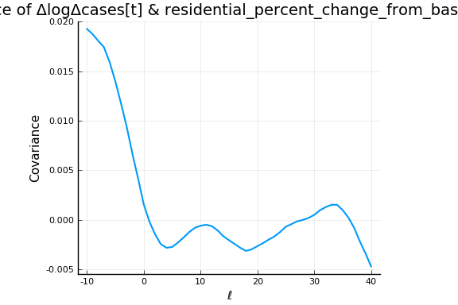 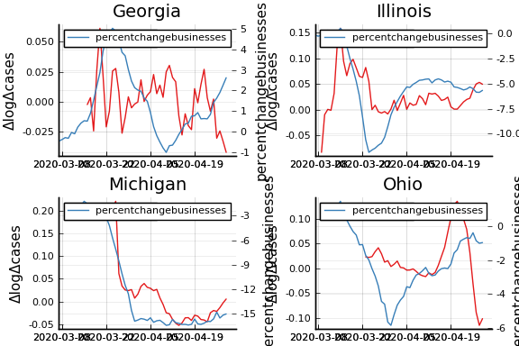 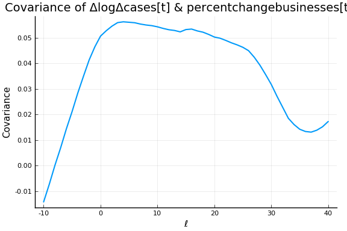 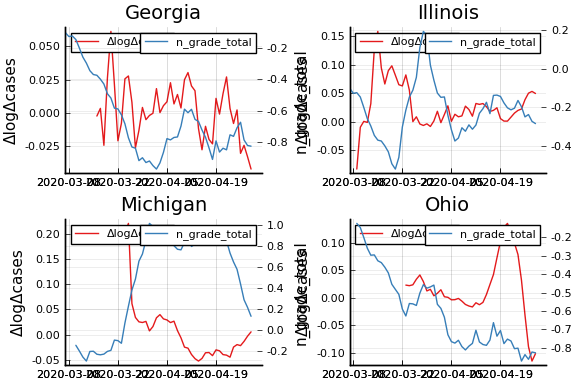
The figures above are with $L=7$.
In these tables, we see that removing time fixed effects, the covariance
between ΔlogΔcases and the measurement variables is greatly reduced.
There is not a super clear pattern about what lag has the highest
covariance
-
It is not the usual arithmetic mean, but whatever value makes the equality hold. Such an $\overline{R}$ exists by the intermediate value theorem. ↩